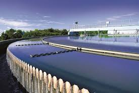

The swift expansion of urban and industrial sectors has led to a concerning surge in water resource contamination and the decline of water quality. As the need for rapid, cost-effective, and precise water quality detection becomes increasingly urgent, traditional monitoring methods appear inadequate, characterized by their protracted processes and high costs, particularly the manual procedures conducted within laboratory settings.

This study delves into the issue from multiple angles, exploring both conventional approaches to water quality assessment and cutting-edge technologies such as the Internet of Things (IoT) and machine learning. By examining these diverse perspectives, we aim to gain deeper insights into the challenge at hand and identify innovative solutions to address water quality monitoring in india as well as many foreign regions across concerns.
HUMAN ACTIVITIES AND WATER POLLUTION
The discharge of untreated or inadequately treated industrial effluents into water bodies introduces a myriad of harmful substances, including heavy metals, chemicals, and organic pollutants. These pollutants not only degrade water quality but also disrupt aquatic ecosystems, endangering aquatic life and biodiversity.

Moreover, industrial activities such as manufacturing, mining, and agriculture often involve the use of various chemicals and fertilizers, which can leach into water sources through runoff, further exacerbating pollution levels. In addition to chemical contaminants, industrial processes may also generate thermal pollution, wherein heated water discharged from manufacturing facilities raises water temperatures, negatively impacting aquatic habitats and species.
Addressing water pollution from an industrial perspective requires comprehensive solutions that prioritize pollution prevention, waste minimization, and sustainable practices. Agua Instruments specializes in providing cutting-edge solutions for monitoring and mitigating industrial water pollution. Through innovative technologies and expertise in process analytics and environmental monitoring, Agua Instruments empowers industries to adopt sustainable practices, minimize their environmental footprint, and safeguard water resources for future generations.
Our impact on water quality extends beyond direct pollution to altering the natural processes that cleanse water ecosystems. Healthy aquatic environments, including wetlands, streams, and oceans, possess innate mechanisms for purifying water of contaminants. Water quality encompasses various characteristics, spanning physical, chemical, biological, and microbiological aspects. Whether employing cost-effective field test kits or advanced probes and meters, gathering water quality data unveils valuable insights into the condition of rivers, streams, and other water bodies.
Utilizing monitoring equipment and scientific methodologies, we acquire comprehensive data on multiple parameters of water quality. By evaluating the health of local water bodies, we gain crucial insights into the impact of human activities on these resources. This understanding empowers us to implement effective strategies for preserving and enhancing water quality for future generations.
Why Choose Agua Instruments for Water Quality Monitoring?
Precision and Accuracy
Our water quality monitors utilize state-of-the-art sensors and advanced analytical techniques to deliver highly accurate and reliable data.
Robust and Durable
Designed to withstand harsh environmental conditions, our equipment remains dependable over long periods.
Comprehensive Support
Agua Instruments provides extensive customer support, from installation and training to ongoing maintenance and troubleshooting. Our team of experts is always ready to assist you.
Innovative Technology
Innovation is at the core of what we do. Our continuous investment in research and development means that you benefit from the latest advancements in water quality monitoring technology.
Sustainability Commitment
Our monitoring solutions help you meet stringent regulatory requirements, contribute to sustainable water management practices, and protect ecosystems and communities.

Ensuring safe drinking water for communities by monitoring water quality parameters such as pH, turbidity, chlorine levels, and microbial contaminants.

Monitoring effluent quality in industrial facilities to comply with environmental regulations and minimize the impact of discharged wastewater on natural water bodies.

Assessing the impact of human activities on water ecosystems, including rivers, lakes, and coastal areas, by measuring parameters like dissolved oxygen, biochemical oxygen demand (BOD), and chemical pollutants.

Optimizing irrigation practices and minimizing agricultural runoff by monitoring soil moisture, nutrient levels, and sedimentation in water bodies.

Maintaining optimal water conditions for fish and aquatic organisms in aquaculture facilities through continuous monitoring of parameters such as temperature, pH, ammonia, and oxygen levels.

Conducting scientific studies and experiments related to water quality, aquatic ecology, and environmental health using accurate and reliable monitoring instruments.

Ensuring the safety and quality of water used in food processing and beverage production by monitoring for contaminants and maintaining compliance with food safety regulations.

Monitoring chlorine levels, pH, and microbial contamination to maintain water quality and ensure the health and safety of swimmers.

Providing hands-on learning experiences for students studying environmental science, chemistry, biology, and related disciplines through water quality monitoring projects and experiments.
| Ammonium | NH4 | 0.1 ...1000 mg/L & 0 ... 10 ppm |
| Nitrates | NO₃⁻ | 0.1 ... 20 mg/L |
| Nitrites | NO₂⁻ | 0.01 ...1000 mg/L |
| Total Nitrogen | TN | 0.1 ...1000 mg/L |
| Phosphates | PO4 | 3- 0.01 ... 20 mg/L |
| Total Phosphorus | TP | 0.01 ... 20 mg/L |
| Chemical Oxygen Demand Equivalent | CODeq | 1 ...10000 mg/L |
| COD Dichloromate | CODeq- | 1 ...10000 mg/L |
| Biochemical Oxygen Demand Equivalent | BODeq- | 1 ...10000 mg/L |
| Total Organic Carbon | TOC | 1 ...10000 mg/L |
| TOC High Temperature | TOC-HT | 0-50,000 mgL |
| Sulphides | S2- | 0.1 ...1000 mg/L |
| Sulphites | SO32- | 0.1 ...1000 mg/L |
| Total Solids | TS | 0.1 ...1000 mg/L |
| Total Suspended Solids | TSS | 0.1 ...1000 mg/L |
| Turbidity | TURB | 0.001 ... 10000 NTU |
| Color | COL | 0.01... 2000 Pt-Co |
| Chlorine | Cl2 | 0.01 ... 20 mg/L |
| Chlorine Dioxide | ClO2 | 0.01 ... 20 mg/L |
| Total Chlorine | TCl | 0.1 ...1000 μg/L |
| Chlorophyll | Chl-a | 0.01 ... 100 mg/L |
| Hydrocarbons | HC | 0.01 ... 100 mg/L |
| Oxygen | O2 | 0.01 ... 100 mg/L |
| Conductivity | EC | 0.001 ... 2000 mS/cm |
| pH | pH+ | 0 ... 14H+ |
| Ozone | O3 | 0.01 ... 10 mg/L |
| Aluminium | Al | 0 ... 1 mg/L |
| Total Ammonia Nitrogen | TAN | 0 .... 100 mg/L |